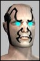

| Author | Thread |
Kealias
Soleet
 Registered: Jan 2002
Posts: 51 | How do you make servie towers attack? I've built the service towers, and tried everything I can think of, but can't get the things to attack. If anyone knows how to do this, it would be greatly apprieciated if they would post. |
Warlock
Supa Leet
Registered: Mar 2002
Posts: 746 | pretty sure its /tower attack
check the tower help though to be sure |
Hypos
Supa Leet
 Registered: Nov 2001
Posts: 545 | And, as with pets, I think you have to have your chosen target selected at the time. |
lear1
EleetRegistered: Apr 2002
Posts: 33 | I couldn't get mine to attack...i guese its b/c i didn't have the target selected,but instead the tower.Are you sure they even attack?all i notice is that it gives you a AC buff... |
Kealias
Soleet
Registered: Jan 2002
Posts: 51 | I'm pretty sure you can attack, I may be mistaken though. The back of the world map that came with NW says: Service towers add personal skill bonuses in combat and will attack enemies within their range.
I was testing out the towers at majestic bridge crossing with a couple friends, one of which was a agent with roots. we tried everything to get the tower to attack the bullies, even rooting (did you guess that yet :P) it right beside the tower. So either there is a command to make the tower attack or it's range is about as big as a nanobot :P |
Eyelusion
Leetas
 Registered: Nov 2002
Posts: 61 | I haven't tried the solo service towers yet. But, from what I understand, after you type /tower attack, you have to also be attacking the mob for the tower to attack. From what I read, it will continue to attack each mob you attack, as long as the mob is within range of the tower.
I would think that quite a few people have tested the towers in the Beta. I wasn't in it, but it was a month long, right? All I've really heard is that they hit "like a wet noodle." |
svendor
Phear Leet
 Registered: Dec 2002
Posts: 104 | Sounds right chopit. Other wise you could get a lower lvl tower to fight lower lvl players that you could not fight in pvp. Or Can you?hmmmm. |
Metalline
EleetRegistered: Oct 2002
Posts: 13 | I could not find any tower command in "/help tower", but here are those I got to work:
/tower attack (selected target)
/tower guard
/tower behind (wait mode)
/tower report
/tower rename "my silly name here" (with tower selected)
/tower terminate
ql 150 towers have approximate 14m buff radius, 50-80 healing on a 4 sec tic, and about 40m weapon range. |
Kealias
Soleet
Registered: Jan 2002
Posts: 51 | /tower rename "Popcorn making drink mixer"

Seriously, look at them. They look like they either mix a drink, or make popcorn. Maybe they do the wash too. :P
Now I have to go try out the towers again, now that I know what to do.  |
Jypsie
Phear Leet
Registered: Feb 2002
Posts: 138 | Thanks for the info, Metalline! |
Evilspork
Supa Leet
 Registered: Jan 2002
Posts: 542 | quote:
Originally posted by Cyronic
/tower rename "Popcorn making drink mixer"
Or "Personal Gumball Machine". |
Xaielao
Supa Leet
 Registered: Nov 2001
Posts: 310 | As my guild leader pointed out..
they look most like an Imperial Probe Droid. Even sound like them a bit hehe.
I've placed a few low ones in the middle of large battles, cause they buff anyone from your faction who has NW. And in battle, we can always use a couple hundred more points in AC right? |
connall
EleetRegistered: Jan 2002
Posts: 19 | They do make an incredibly silly noise... the first time I heard one, I couldn't stop laughing.
But all things aside, i think that they are a top idea, and great fun. They have the hp of a mutilated mutant, hit like wet lettuce and have the range of a rooted MA - but what were you expecting? These things are not supposed to be Slayerdroids!
Anyway - /tower attack seems to work for me.
Ailish
Thinker, Doer, Warrior-Poet
President of First Light
Queen of West Athen |
Jynne
Supa Leet
 Registered: Feb 2002
Posts: 1202 | Hmm can you get the service towers back after you place them or are they just disposable? |
BanSioux
Eleet
 Registered: Dec 2002
Posts: 6 | They are disposable, at least if there is a way to pick them back up no one has figured it out yet. |
Jynne
Supa Leet
Registered: Feb 2002
Posts: 1202 | Yah, I've been toying around with 'em, and haven't been able to get them back after emplacing them.
Makes me kind of wonder why you'd want to use one that you needed to have made via trade skill processes. |
BanSioux
Eleet
Registered: Dec 2002
Posts: 6 | In theory, if you could make one of a high enough ql, it would be like an added team member that doesn't leech XP or complain |
Evilspork
Supa Leet
Registered: Jan 2002
Posts: 542 | Doesn't complain!?
/me dumps all his ip into aqua tradeskills so he can use service towers.
|
Samuz
Leetas
 Registered: Apr 2002
Posts: 22 | quote:
Originally posted by Fion
As my guild leader pointed out..
they look most like an Imperial Probe Droid. Even sound like them a bit hehe.
Star Wars Galaxies & Anarchy Online is going to merge into one large MMORPG when SWG comes out early next year.
Didn't you know this !?!?
This is being hyped everywhere ......
This is only the beginning !
Soon we'll have Tie Fighters patrolling the skies over Omni-1, land speeders parked outside Tir and Star Destroyers in orbit over Rubi-Ka. (*drewl* ... can't wait !!) |
Courtney
Phear Leet
Registered: Feb 2002
Posts: 59 | seems personal support service towers are buggy...
My fixer can not make thier tower attack
My burocrats tower can attack...
my Traders tower Cant attack...
I have seen an engies tower attack..
Maybe Tower attack abilties are disabled on non-pet classes?? |
All times are GMT.


 Last Thread Next Thread
Last Thread Next Thread 
 December 5th, 2002 22:16
December 5th, 2002 22:16